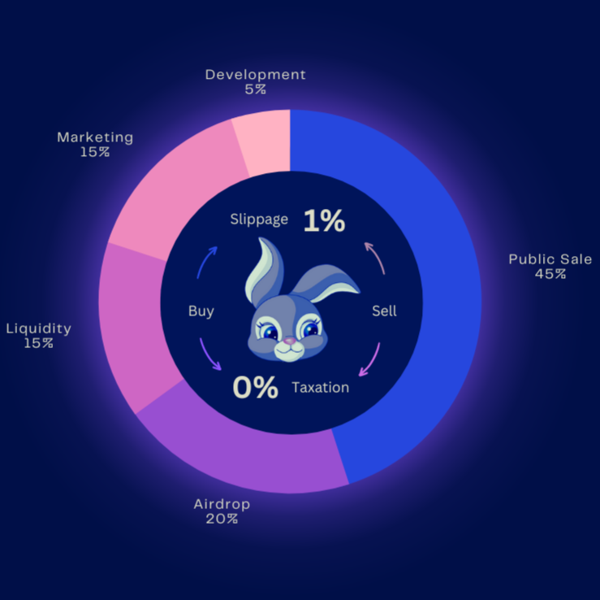

Hop on the revolutionary memecoin!
Discover Stellar Network
Aside from being known by the native coin (XLM), Stellar is a secured blockchain network that enables super fast low-cost transactions and a decentralised exchange that features 0.3% fee on swaps and 0% fee on spot trades. This is the blockchain network on which Acoshi Rabbit (ARBT) token is created, and with the Stellar's reliable and efficient infrastructure, Acoshi Rabbit aims to sustain wealth creation opportunities for beginners and enthusiasts in the cryptoverse.
About Acoshi Rabbit
Acoshi Rabbit (ARBT) is a revolutionary meme-inspired cryptocurrency for the masses, Acoshi Rabbit has learnt a few tricks from the memes father Dogecoin and aims to sustain a more profitable cryptoverse for both beginners and enthusiasts. Acoshi Rabbit is hyper-focused on changing the narrative of fun tokens on the Stellar network by being transparent, decentralized and useful to humanity; thus have the issuer account ownership renounced and liquidity locked. Furthermore, Acoshi Rabbit will be listed on Coinmarketcap, Coingecko and multiple centralised exchanges to foster its mass usage in exchange for goods and services globally. Regardless, we believe the development and success lies in the strength of its growing community that believes in the social of shared value.
Tokenomics Features
Total Supply: 100,000,000,000

Fair Launched
Acoshi Rabbit is a cryptocurrency for the masses; therefore issuer ownership is renounced forever, 20% of token total supply is made available for airdrop and 45% of token total supply is made available for everyone on the Stellar DEXs to ensure full ownership and control by everyone as there is no free tokens for dev and team.

Liquidity Locked
15% from token total supply is deposited to create XLM/ARBT and ARBT/USDC liquidity pools and the liquidity is locked to continually secure invested funds and boost confidence for flippers and diamond hands.

Strategic Marketing
15% from token total supply is set aside for strategic marketing to effect visibility, build a strong community and bring about unlimited profitable price trends for traders and investors.

Token Reserves
5% of $ARBT tokens from total supply is reserved for development use, such like to continually sustain, maintain and enhance token visibility through a multiple Centralised Exchanges listing.
Roadmap
Here is the details of $ARBT path ahead and we are determined to follow through each of the milestone within possible time.
Phase 1
Phase 2
Phase 3
Partnerships

StellarTerm
StellarTerm is a user-friendly and decentralized exchange that allows individuals to trade curated digital assets on the Stellar network.

Scopuly Wallet
Scopuly is a multifunctional platform for creating, storing, and managing digital assets that uses blockchain technology to ensure transparency and security.
Lobstr Wallet
Lobstr is a user-friendly digital wallet designed to securely store and manage various digital assets, including the XLM token on the Stellar network.
Coinscouts.io
CoinScouts is the world's most powerful crypto database. It is a community-driven one-stop platform for finding, analyzing, and discussing cryptocurrencies. Using special filters, you can DYOR with just a few clicks!.
Blockspot.io
Blockspot.io is one of the largest blockchain databases platforms that provides investors and enthusiasts with reliable and accurate information about cryptocurrency projects and companies from all over the world.
Social Forums
For partnership, enquiry, suggestion, proposal and project related issues; kindly connect with us.